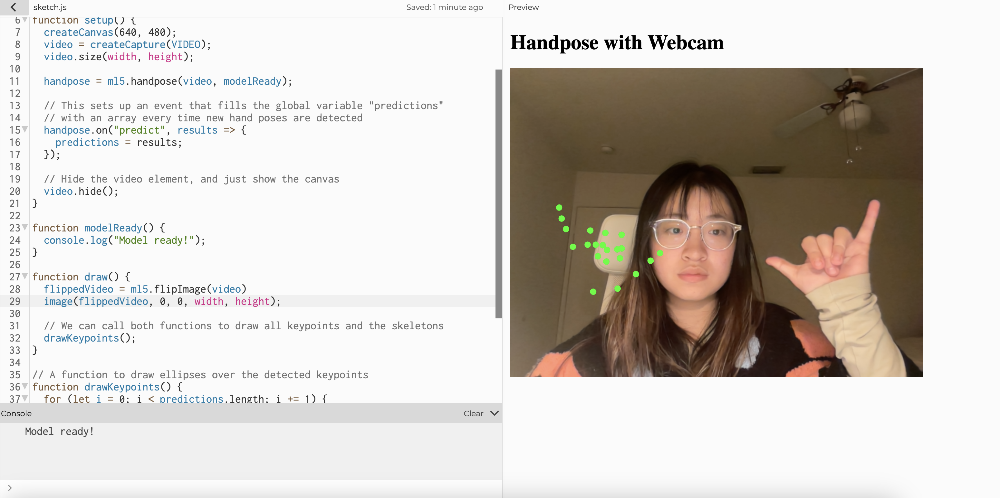

For this interface, I'm thinking about making a dice throwing device that's realized by Hand Pose in ml5js.
First, we need to flip the video also try to match drawn points to the image.
Second, we need to add another hand also as the point tracker. After some research, I'm looking into MediaPipe on how it is done with both hands.